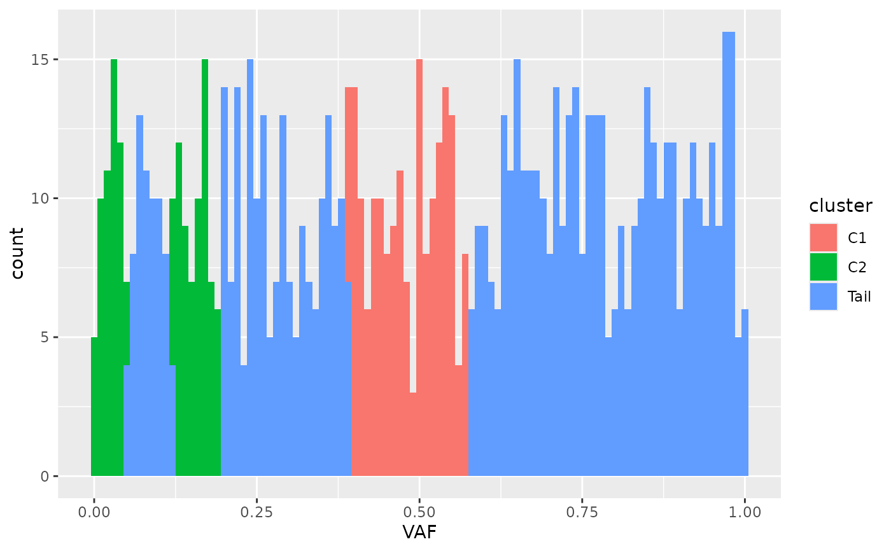

Assign new observations to the clusters inside a MOBSTER fit.
Source:R/Clusters_denovo.R
Clusters_denovo.RdFor a new set of observations in the MOBSTER input format, the parameters and clusters of a MOBSTER fit are used to determine the assignments of the new points. MOBSTER density function is used to determine which cluster has the highest density for each observation, and the cluster label is computed accordingly.
Value
The data in y is augmented with a colum per mixture component reporting
the corresponding density value. A final colum `cluster` is also added reporting the
component name for the hard clustering assignment of the point.
Examples
library(ggplot2)
data('fit_example', package = 'mobster')
# Generate some randome numbers and assign them to the most likely mixture component
new_assignments = Clusters_denovo(fit_example$best, data.frame(VAF = runif(1000)))
print(new_assignments)
#> # A tibble: 1,000 × 5
#> VAF Tail C1 C2 cluster
#> <dbl> <dbl> <dbl> <dbl> <chr>
#> 1 0.00740 -Inf -469. -65.6 C2
#> 2 0.466 -2.97 1.92 -49.7 C1
#> 3 0.498 -3.11 1.78 -58.9 C1
#> 4 0.290 -1.90 -20.3 -11.7 Tail
#> 5 0.733 -3.98 -39.3 -164. Tail
#> 6 0.773 -4.10 -55.9 -192. Tail
#> 7 0.875 -4.38 -127. -299. Tail
#> 8 0.175 -0.761 -66.6 0.164 C2
#> 9 0.0342 -Inf -265. -22.2 C2
#> 10 0.320 -2.12 -13.2 -16.7 Tail
#> # ℹ 990 more rows
# Plot a histogram coloured according to the clusters
ggplot(new_assignments, aes(VAF, fill = cluster)) + geom_histogram(binwidth = 0.01)
